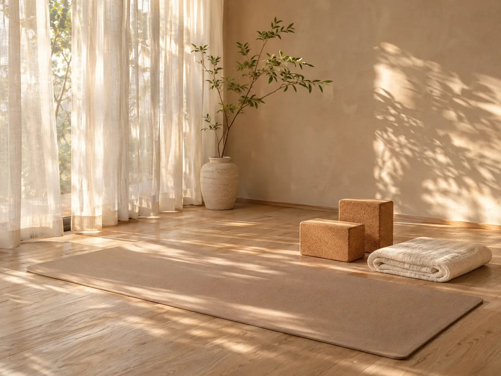

Machine Pilates & Mindful Yoga
深い呼吸から、姿勢と心が
すっと軽くなる時間。
自然光が満ちる最大6名の少人数スタジオ。リフォーマーを使った丁寧なマシンピラティスとリラックスヨガで、しなやかな体軸を育てます。

Machine Pilates & Mindful Yoga
自然光が満ちる最大6名の少人数スタジオ。リフォーマーを使った丁寧なマシンピラティスとリラックスヨガで、しなやかな体軸を育てます。
Rhythm of the Day
深い腹式呼吸と緩やかなストレッチで自律神経を整え、一日を軽やかに始めるモーニングクラス。出勤前のリフレッシュにも人気です。
Why Small-Group Pilates
鏡の前で真似するだけではなく、インストラクターが呼吸の深さと骨盤の傾きを一人ずつ丁寧に確認します。
専用のバネ負荷が関節への負担を和らげながらインナーマッスルへ的確にアプローチ。運動経験の少ない方でも無理なく続けられます。
強い音楽や過度な掛け声を排し、自分の呼吸音と身体の微細な変化に意識を向けられる落ち着いた環境を整えました。
デスクワークによる慢性的な肩こり・腰痛をピラティスで克服した経験から、日常の立ち姿や呼吸をラクにする丁寧な指導を行っています。
BASI Pilates 国際認定インストラクター ／ 理学療法士監修研修修了
朝の自律神経を整えるフローヨガと、夜の深い休息へ導くリストラティブヨガを担当。産後ケアや更年期世代の体調ケアにも寄り添います。
全米ヨガアライアンス RYT500 ／ マタニティ・産後ヨガ認定

Trial & Membership
ウェア・タオル・お水はすべて無料貸出。お仕事帰りにも気軽にお立ち寄りいただけます。
Weekly Schedule & FAQ
| TIME | 火 | 水 | 木 | 金 | 土 | 日 |
|---|---|---|---|---|---|---|
| 08:00 | 朝ヨガ | — | 朝ピラティス | 朝ヨガ | 朝ピラティス | 朝ヨガ |
| 11:00 | 姿勢改善 | 体幹基礎 | 姿勢改善 | 骨盤ケア | 体幹基礎 | 姿勢改善 |
| 14:00 | やさしいヨガ | 姿勢改善 | — | 肩首リリース | やさしいヨガ | — |
| 19:30 | 夜リリース | 姿勢改善 | 夜リリース | 体幹基礎 | — | — |
会員様の約7割がピラティス・ヨガ未経験からスタートしています。リフォーマーのバネが身体を支えてくれるため、柔軟性に自信がない方こそ心地よく動かせます。
動きやすい上下ウェア・フェイスタオル・滑り止め靴下・お水はすべて無料でご用意しています。お仕事帰りやお買い物ついでに手ぶらでお越しください。
レッスン開始の3時間前まで、スマートフォンから回数消化なしで何度でも変更・キャンセルいただけます。
無理な勧誘は一切行いません。ご自宅でゆっくりご検討いただいてから、後日WEBよりご入会手続きをされる方も多くいらっしゃいます。